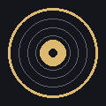

Universal Sendspin & Music Assistant Multi-room Audio Player (iOS 3.0 — 9.3+)
Tap below to add this repository directly to your jailbreak manager:
Or manually enter the repository URL:
⚠️ Hardware Note: Tested & verified on iPhone 4s (iOS 9.3.6).